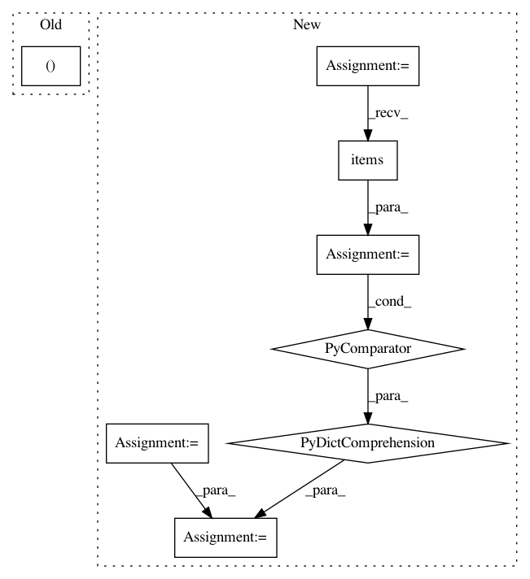

27187bfff545ef066da5627d7dff8a6caad19e9e,tensorflow_transform/beam/impl.py,TransformDataset,expand,#TransformDataset#Any#,411
Before Change
output_values = input_values | "MapInstances" >> beam.ParDo(
_RunMetaGraphDoFn(input_schema, output_schema),
transform_fn_def=beam.pvalue.AsSingleton(transform_fn))
return (output_values, output_schema)
After Change
// If exclude_outputs is set, update the output metadata, which will also
// cause _RunMetaGraphDoFn not to create the excluded outputs.
if self._exclude_outputs is not None:
schema = output_metadata.schema
output_metadata = dataset_metadata.DatasetMetadata(
schema=dataset_schema.Schema(
{key: column_schema
for key, column_schema in schema.column_schemas.items()
if key not in self._exclude_outputs}))
output_instances = (
input_values
| "BatchInstances" >> beam.ParDo(_BatchDoFn())
In pattern: SUPERPATTERN
Frequency: 4
Non-data size: 8
Instances
Project Name: tensorflow/transform
Commit Name: 27187bfff545ef066da5627d7dff8a6caad19e9e
Time: 2017-02-16
Author: no-reply@google.com
File Name: tensorflow_transform/beam/impl.py
Class Name: TransformDataset
Method Name: expand
Project Name: coala/coala-bears
Commit Name: d90bd80c85adfeefc14c51466bab48bce7619c53
Time: 2016-06-10
Author: lasse.schuirmann@gmail.com
File Name: bears/general/CPDBear.py
Class Name: CPDBear
Method Name: CPDBear_1
Project Name: mathics/Mathics
Commit Name: 3c70d80fe38b326fa8455637cbe619a04d98c0a5
Time: 2021-01-23
Author: pablo-escobar@riseup.net
File Name: mathics/core/util.py
Class Name:
Method Name:
Project Name: facebookresearch/pytext
Commit Name: cb8e2c5d60f79803d234da504477193611836d1f
Time: 2020-04-20
Author: stevenliu@fb.com
File Name: pytext/task/new_task.py
Class Name: _NewTask
Method Name: predict